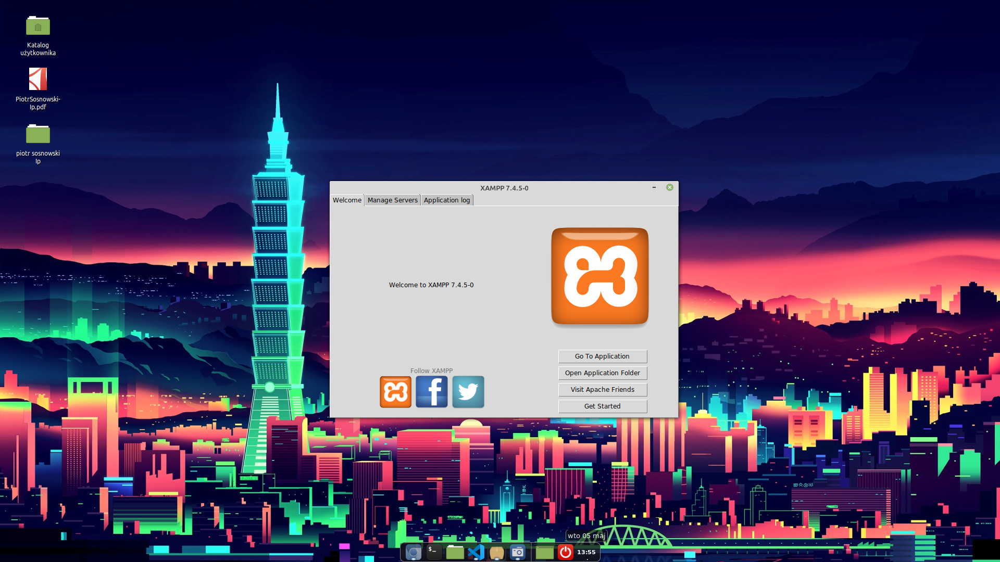

Co to jest Xampp?

Xampp to darmowy, wieloplatformowy, zintegrowany pakiet, składający się głównie z serwera Apache, bazy danych MySQL i interpreterów dla skryptów napisanych w PHP i Perlu. Nazwa XAMPP jest akronimem od X (ang. cross-platform), Apache, MySQL, PHP, Perl.Pakiet jest wydawany na licencji GNU General Public License jako darmowy serwer WWW do obsługi dynamicznych stron. Obecnie XAMPP jest dostępny na cztery platformy: Microsoft Windows, Linux, Sun Solaris oraz OS X. Na MS Windows dostępna jest też wersja PortableApps którą można zainstalować np. na Pendrive i przenosić.Może służyć jako środowisko dla testerów, programistów, którzy chcą szybko przetestować skrypty na swoim lokalnym komputerze, bez konieczności uruchamiania na serwerze.